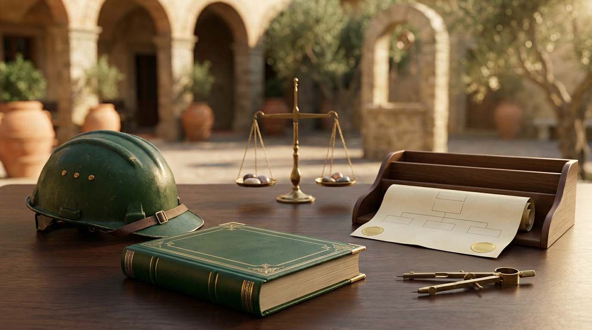

Dipendente inidoneo: l'azienda deve creare un nuovo posto?
Quando un lavoratore diventa inidoneo alle mansioni, il licenziamento non è automatico. Prima il datore deve verificare se esistono soluzioni organizzative ragionevoli per conservare il posto. L'orientamento consolidato della Cassazione lo impone, salvo che gli adattamenti comportino oneri sproporzionati. Vediamo cosa significa in concreto per aziende e dipendenti, e dove passa il confine della legittimità del recesso.

Il caso e il principio
Un dipendente diventa inidoneo, in modo permanente o parziale, a svolgere le mansioni per cui è stato assunto. La causa può essere una malattia, un infortunio o l'aggravarsi di una disabilità. La domanda ricorrente è la stessa: il datore di lavoro può licenziarlo, o deve prima fare qualcosa per trattenerlo?
L'orientamento consolidato della Corte di Cassazione è netto: il licenziamento per inidoneità è una *extrema ratio*. Prima di recedere, il datore deve verificare se esistono accomodamenti ragionevoli che consentano al lavoratore di restare in azienda. Non si tratta di una facoltà, ma di un obbligo, il cui mancato rispetto rende il licenziamento illegittimo.
Inquadramento normativo
La nozione di accomodamento ragionevole nasce dal diritto antidiscriminatorio. L'art. 3, comma 3-bis, del D.lgs. 9 luglio 2003, n. 216 (introdotto per adeguarsi alla direttiva 2000/78/CE) impone ai datori di lavoro di adottare gli accomodamenti ragionevoli per garantire alle persone con disabilità la piena uguaglianza sul lavoro.
L'obbligo si completa con altre tre disposizioni:
- L'art. 42 del D.lgs. 81/2008: in caso di inidoneità accertata dal medico competente, il datore deve adibire il lavoratore, ove possibile, a mansioni equivalenti o, in subordine, inferiori, mantenendo il trattamento corrispondente alle mansioni di provenienza per quelle superiori.
- L'art. 4, comma 4, della L. 68/1999, per i lavoratori divenuti disabili in costanza di rapporto, che impone soluzioni di reimpiego compatibili.
- L'art. 2103 c.c., che disciplina lo *jus variandi* e legittima, entro limiti precisi, l'adibizione a mansioni inferiori: il demansionamento è consentito quando serve a conservare l'occupazione e, per la giurisprudenza, richiede di norma il consenso informato del lavoratore.
Il quadro è quindi unitario: l'inidoneità sopravvenuta attiva un dovere di ricollocazione che precede e condiziona il potere di recesso.
Cosa significa "accomodamento ragionevole"
Per accomodamento ragionevole si intende ogni modifica organizzativa o materiale che consenta al lavoratore di proseguire l'attività. In concreto:
- Adattamento della postazione: ausili tecnici, modifiche agli strumenti, eliminazione di barriere.
- Modifica dell'orario: part-time, turni compatibili con la condizione di salute.
- Riorganizzazione delle mansioni: redistribuzione dei compiti incompatibili tra i colleghi.
- Formazione e riqualificazione: per spostare il lavoratore su una posizione sostenibile.
- Ricollocazione su mansioni diverse, equivalenti o inferiori, secondo l'art. 2103 c.c.
L'azienda non è però tenuta a creare *ex novo* un posto che non esiste, né a stravolgere l'assetto produttivo. Il limite è la proporzionalità.
I criteri di proporzionalità
Il punto più delicato è capire quando l'accomodamento diventa sproporzionato e, quindi, non esigibile. La giurisprudenza valuta diversi parametri concreti:
- La dimensione aziendale e la complessità organizzativa: a una grande impresa è richiesto uno sforzo maggiore rispetto a una micro-impresa.
- L'incidenza economica del costo dell'adattamento rispetto al fatturato e alla capacità finanziaria dell'azienda.
- La disponibilità di finanziamenti o agevolazioni pubbliche che possano coprire l'onere.
- L'impatto sull'organizzazione degli altri lavoratori e sul ciclo produttivo.
- Il consenso del lavoratore all'eventuale demansionamento, di regola necessario per la legittimità della diversa adibizione.
Nessun parametro è risolutivo da solo: il giudizio è sempre di bilanciamento.
Implicazioni pratiche
L'onere della prova grava sul datore di lavoro. È l'azienda a dover dimostrare di aver esaminato le alternative e che nessuna era praticabile a costi sostenibili. Una decisione presa senza istruttoria documentata è esposta all'annullamento.
Per il lavoratore, questo significa che il licenziamento intimato "al primo certificato" di inidoneità è spesso aggredibile. Per l'azienda, che la tracciabilità del percorso valutativo è decisiva: ciò che non è documentato, in giudizio, è come se non fosse avvenuto.
La legittimità del recesso dipende da circostanze specifiche e dalla qualità della documentazione raccolta.
Cosa fare in concreto
Per l'azienda:
- Acquisisci il giudizio del medico competente ex art. 42 D.lgs. 81/2008 e definisci con precisione i limiti residui.
- Mappa per iscritto le posizioni alternative disponibili, equivalenti o inferiori, valutandone la compatibilità.
- Documenta la valutazione di costi e oneri degli accomodamenti possibili, comprese eventuali agevolazioni pubbliche.
- Coinvolgi formalmente il lavoratore, raccogliendone il consenso in caso di mansioni inferiori.
- Procedi al recesso solo dopo aver verificato e documentato l'impraticabilità di ogni alternativa ragionevole.
Per il lavoratore:
- Conserva il giudizio di inidoneità e ogni comunicazione aziendale.
- Manifesta per iscritto la disponibilità a mansioni alternative, anche inferiori.
- Verifica se l'azienda ha realmente esaminato soluzioni organizzative.
- In caso di licenziamento, valuta i termini di impugnazione, che sono brevi.
Disclaimer
Contributo informativo a cura di Tamburro & Partners Avvocati - Avv. Giuseppe Tamburro. Non costituisce parere legale.
Ogni storia di lavoro ha i suoi tempi.
Se gestisci HR e vuoi un confronto su contenzioso, ispezioni o licenziamenti, scrivi allo studio. Ti rispondiamo entro un giorno lavorativo.